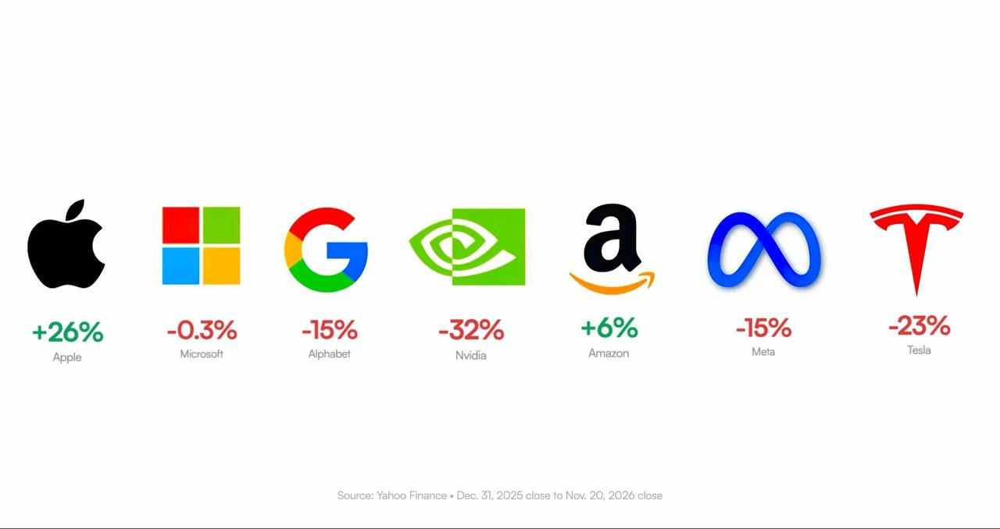
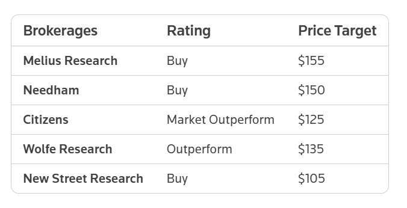

過去 26 小時共 5 則：一則轉貼工商時報「證交所急召十券商、討論融資維持率降到 120%」的台股救市新聞；兩則圖片調侃今年 Mag 7 只有 Apple 大漲；兩則談 Anthropic（ANT）上市後 Citizens 的首次覆蓋報告與各券商目標價。
講解
連結是工商時報 11/22 的報導〈證交所急召十券商！今討論融資維持率是否降至120％備受矚目〉。報導內容：台股從 10/6 歷史高點 49,968 點跌到 35,738 點，跌約 14,230 點、約 28%，點數為史上最大、幅度史上第九。證交所據傳緊急找元大、凱基、富邦、群益金鼎等十家券商開會，討論把整戶融資擔保維持率的追繳門檻從 130% 降到 120%，預計本週施行；行政院 11/21 也開了財經首長會議，此前已有國安基金進場、限空令等措施。
機制：用融資買股，股價跌到「擔保品市值 ÷ 借款」低於追繳線（現行 130%）時，券商會要求兩天內補錢，補不出就斷頭賣出，賣壓又推低股價，形成連環斷頭。把門檻降到 120% 等於多給融資戶約一成的緩衝，目的是阻斷斷頭螺旋，但不改變槓桿本身的風險，只是延後處分；若行情續跌，屆時一次處分的量可能更大。
需注意：報導用的是「據傳」「討論」「預計」，我查不到會議結論或正式公告，調降是否實施仍待證交所／金管會公告確認。報導中整體維持率也有兩個版本（證交所儀表板 151.78% vs 民間資料庫 122.49%；含 ETF 138.42%、扣除 ETF 119.53%），差異來自計算口徑，證交所先前也曾發聲明請外界引用數據要審慎，扣除 ETF 後已低於 130% 的數字代表個股融資戶壓力明顯較大。
（無文字，兩張圖片）

圖一：Yahoo Finance 資料，2025/12/31 收盤至 2026/11/20 收盤的漲跌幅：Apple +26%、Microsoft -0.3%、Alphabet -15%、Nvidia -32%、Amazon +6%、Meta -15%、Tesla -23%。
圖二：迷因圖，Tim Cook 照片配上「Do nothing. Win.」
講解
兩張圖是一組梗：今年 AI 資本支出最兇的公司（Nvidia、Alphabet、Meta、Microsoft）股價反而落後，被市場質疑 AI 投資回報；Apple 在 AI 軍備競賽相對保守、沒有大舉燒資本支出，反而成為七巨頭中表現最好的。這跟近期「AI 支出可持續性疑慮讓 Nasdaq 100 進入修正」的市場氛圍一致。圖中數字為截至 11/20 的特定區間，不代表最新股價。
看了一下 citizens 對 ant 的 initial
投資論點的成立是飛輪環節都要順暢，27/28 年增率要維持高標才撐得住算力承諾。再來前陣子 Google 被全市場看沒有，但現在驚喜轉身，一旦領先地位被挑戰，估值就會影響 (個人猜測營收影響有限，但一定被拿來作文章)
最後就是需求，這個現在很難說得準，但至少看得到的範圍內，越來越多企業再追求 lower cost of AI
- 模型維持領先，且領先會自我強化。Fable 5.2 在 Artificial Analysis 拿 65 分，高於 OAI 的 62 與 Google 的 60。Claude 主導 26% 的模型研發任務、寫出超過 90% 的程式碼貢獻，報告認為這會縮短每一代模型的間隔
- 從工程師用 Claude Code 切入，再擴到其他知識工作與核心流程，淨營收留存率約 900%。業務團隊做的是協助客戶留住預算，銷售成本很低，目標是從 code 擴散到全公司
- 四種晶片當成同一個資源池調度，2Q26 營收年增超過 1300%、算力費用只增 300%。模型假設算力與基礎設施占營收從 2027 年的 73% 降到 2029 年的 60%，長期營業利益率目標 35% 以上
- Gartner 預估全球 AI 支出從 2025 年 $1.8T 增至 2030 年 $7.0T，長期則是切入價值超過 $40T 的知識工作。IPO 價對應 CY28 EV/營收 4.7x，Citizens 認為成長性值得 7.5x，比同業中位數高約 20%，得出目標價 $125

#6575 圖：各券商對 ANT 的評等與目標價：Melius Research 買進 $155、Needham 買進 $150、Citizens Market Outperform $125、Wolfe Research Outperform $135、New Street Research 買進 $105。
講解
「ant」指 Anthropic 的股票代號 ANT。依外電，Anthropic 以每股 $83 定價、募資含私募共約 $1,073 億（史上最大 IPO），估值約 $1.5 兆，11/19 在 Nasdaq 掛牌；首日開 $111.50、收 $97.17（較 IPO 價約 +17%），開盤高點沒守住。以 IPO 價 $83 計，Citizens $125 約有 51% 上漲空間，Melius $155 約 87%；「initial」指的是承銷靜默期結束後券商的首次覆蓋報告。
貼文整理的 Citizens 論點可拆成三環「飛輪」：（1）模型領先→用自家模型加速研發（報告稱 Claude 主導 26% 研發任務、寫出九成以上程式碼）→下一代更快推出；（2）以 Claude Code 從工程師切入、再擴散到全公司，淨營收留存率（NRR，舊客戶今年支出 ÷ 去年支出）約 900%，代表既有客戶一年內支出放大約 9 倍，獲客成本低；（3）把多種晶片（GPU/TPU/Trainium 等）統一排程以壓低單位算力成本，營收增速遠高於算力費用增速，模型假設算力占營收由 2027 年 73% 降至 2029 年 60%，長期營益率 35% 以上。估值上用 EV/營收倍數：IPO 價只對應 2028 年預估營收 4.7 倍，Citizens 給 7.5 倍得出 $125。
股癌自己的保留意見有三點：飛輪每一環都得順，2027–28 年營收要維持高成長才撐得住龐大算力承諾（外電稱未來幾年規劃的算力支出約 $8,950 億）；Google 近期反彈若挑戰其模型領先，估值敘事會先受傷；需求面難預測，只能看到企業愈來愈追求「更低的 AI 成本」——這點對 Anthropic 是雙面刃，既是需求也代表價格壓力。
查證與限制：Citizens 報告原文我無法取得，貼文中的 NRR 900%、2Q26 營收年增逾 1300%、算力費用增 300%、Artificial Analysis 分數等數字，只能視為貼文對該報告的轉述，未獨立驗證；NRR 900% 極不尋常，可能是特定客群或特定期間的口徑，解讀時要小心。各家目標價與評等與外電報導一致。另有偏空看法：Seaport Research 給「中立」、無目標價，認為第三季成長將明顯放緩、第四季看不到明顯再加速，兩年內成長須大幅提升才撐得住估值；此外有早期股東出售近 $20 億股份、承銷費約 $5.5 億等資訊，大盤也因 AI 資本支出疑慮處於修正中。目標價是券商的前瞻預測，不是保證。